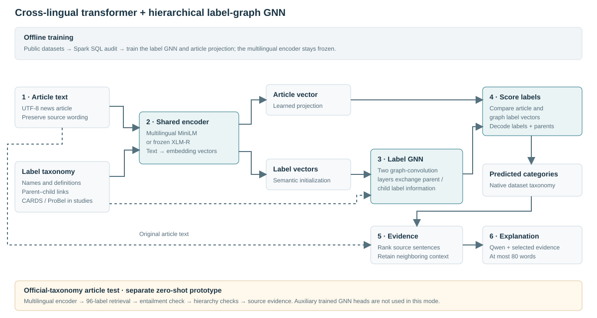

Prepare & audit
Offline: pin public releases and preserve native labels. Spark SQL checks records, duplicate groups and split overlap before training. At inference, preserve the pasted article and split it into text units.
BIG DATA ANALYTICS · SEMEVAL-2025 TASK 10 INSPIRED
A cross-lingual transformer and a hierarchical label-graph GNN connect news text to structured labels and supporting evidence.
THE CORE COMPONENT
The transformer represents text across languages. A trainable graph network represents relationships between broad and fine labels. Their representations are compared to produce label scores.

Follow the trace in Analyze. The public test uses the organizer’s official label vocabulary in an explicitly marked zero-shot mode.
Offline: pin public releases and preserve native labels. Spark SQL checks records, duplicate groups and split overlap before training. At inference, preserve the pasted article and split it into text units.
Frozen multilingual MiniLM embeds text and label descriptions. Long text is encoded in token chunks and pooled. XLM-R with mean pooling is an encoder comparison.
A two-layer GCN passes information between parent and child label nodes. A learned projection compares article vectors with fine-label vectors.
In measured studies, select settings on development data and decode native CARDS or ProBel categories. The separate official-taxonomy prototype matches label descriptions and validates their parent links.
Rank sentences against the target label, preserving neighboring context. Compare semantic selection with TextRank and leading sentences.
The local pipeline can ask Qwen for an attributed explanation of at most 80 words. Browser mode shows an evidence extract instead. Both retain source evidence and clearly identify the output type.
Nodes represent labels, rather than articles or social-network accounts. Parent–child edges come from each dataset's published taxonomy.
Illustrative view of native ProBel categories; it is not a prediction.
TF-IDF and LSA provide compact comparison baselines. Cross-lingual transfer uses source-language training and development data only.
OFFICIAL LABEL VOCABULARY
The article test restricts every narrative and subnarrative to the organizer’s public hierarchy: 22 coarse categories and 96 fine labels across climate change and the Ukraine–Russia war, including global and parent-specific Other labels.
The trained GNN models retain native CARDS, ProBel or Slavic persuasion labels. Official-taxonomy matching is a separate zero-shot prototype; official-task accuracy has not been established.
The dedicated local model combines a frozen cross-lingual encoder with a 25-node role graph: 22 fine roles and three parents. It encodes the target name, marked local context and article, then jointly learns broad and fine roles. Exact target offsets and one-parent role compatibility are enforced.
Analyze includes an experimental browser NLI baseline and optional local GNN. The current GNN pilot uses named-LLM silver annotations; scores measure teacher agreement, not verified role accuracy. YASO sentiment remains a separate supporting task.
Initial diagnostic: 27 training, 8 development and 7 held-out silver mentions; only 9/22 roles appear in training. Full GNN and context-only control each match the teacher on 1/7 held-out mentions (14.3%). Test languages are English, Hindi and Portuguese; Bulgarian/Russian role accuracy is not tested. This is a weak pilot, not evidence of accurate entity framing.
Subtask 1 implementation, training and evaluation ↗Native-language evaluation now covers English, Arabic, Bulgarian, Russian, Hindi and Portugal-publisher Portuguese across separate auxiliary tasks. Study 02 shows language-specific results and transfer where label inventories are shared. This is not a six-language official narrative benchmark.
| Dataset | What we evaluate | Scope |
|---|---|---|
| CARDS/4C + EMM ↗ | Hierarchical climate-claim classification, source transfer, longer-text explanation study | English; native claim labels; no human explanation references |
| ProBel ↗ | Multi-label propaganda techniques, graph controls, bilingual and transfer experiments | English/Arabic news units; 23 techniques in 6 groups; publisher explanations are model-authored |
| Slavic persuasion corpus ↗ | Native bilingual classification, three-seed graph ablations and source-only transfer | Bulgarian parliamentary debates / Russian social media; 25 techniques in 6 groups; language and domain shifts are confounded |
| H-Prop-News ↗ | Native Hindi propaganda classification with lexical, latent-semantic and multilingual transformer heads | Binary article labels; no artificial GNN hierarchy; 150 held-out articles |
| PartisanLens Portugal-publisher subset ↗ | Hyperpartisan headline classification with training-majority control | Fixed Portugal publisher allowlist; Brazilian/unknown outlets excluded; 33 test headlines; publisher location is a language-variety proxy |
| YASO ↗ | Targeted sentiment as a supporting span-context experiment | English clear-text subset; sentiment is not an entity role |
| e-SNLI ↗ | Supporting explanation controls against human references | English inference pairs; not news-narrative explanations |
The official Task 10 corpus is unavailable. The code supports its three subtask formats; public alternatives evaluate related components. Native persuasion techniques, climate claims and entity roles remain distinct. These results are not official SemEval benchmark scores.
FIVE KEY STUDIES
Follow the core model from classification and graph controls to explanation generation and data processing. Each study states its aim, protocol, results and limits.
Loading the five studies…
APPENDIX
Supporting source-transfer, evidence-selection, grounding and timing studies are retained here. They keep their original protocols and provenance.
| Study | Model / control | Result | Evaluation | Details |
|---|
Configurations fix splits, seeds and model revisions. Raw texts and individual reviews stay local. Each result records its source commit and input hashes. “Core” identifies the requested transformer–GNN architecture, not the highest score. Scores from different tasks and units should be interpreted within their study.
The new blinded judge is Qwen2.5-3B-Instruct with pinned Q4_K_M weights. Review scores are model-based proxies, with the rubric and matched sample size stated in Study 04. Historical audits with an unspecified judge remain explicitly historical in the appendix.
Full aggregate results and protocols ↗ARTICLE LAB
Paste an article or load a text file. Watch the input, encoder, candidate labels, hierarchy validation and evidence stages. All returned narrative names use the organizer’s public taxonomy.
Supply the exact entity string and choose its occurrence. This follows the official mention-level task: one broad role and compatible fine roles from the 22-role hierarchy. The experimental NLI baseline can confuse roles, including on simple examples. Neutral mentions may have insufficient evidence; there is no invented Other role.
Browser mode runs a multilingual NLI transformer on your device and does not upload the article. The separately trained role GNN runs locally. Its current checkpoint uses explicitly labelled LLM-silver data, not official annotations; accuracy is unverified.
Add supplied target mentions to start. No automatic entity detector is substituted.
Abstentions cannot be exported as official prediction rows. Export uses original entity spelling and codepoint positions; select the convention required by your release. Organizer scorer parity has not been verified.
Official entity-role definitions ↗This zero-shot prototype retrieves label descriptions and checks claim agreement with a multilingual NLI model; it is not a GNN trained on official SemEval annotations. Results are candidate narratives for inspection. The public browser mode does not run the auxiliary GNN or an LLM.
Browser mode processes text on your device. Its first run downloads about 280 MB of model/runtime files; subsequent runs reuse the cache. Pasted articles are not uploaded in browser mode.
Ready. Choose a domain and enter article text.
These benchmark models predict native climate claims or persuasion techniques. They do not return official SemEval narrative labels.
Run the command from the project folder after setup, then open the address below. Text and reviewer records stay on your machine.
python -m semeval.webChecking local workspace availability…
Read the source and supplied target, then assess the explanation. Method names are hidden. Scores have no default values.